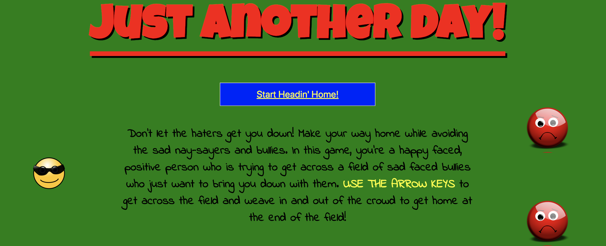
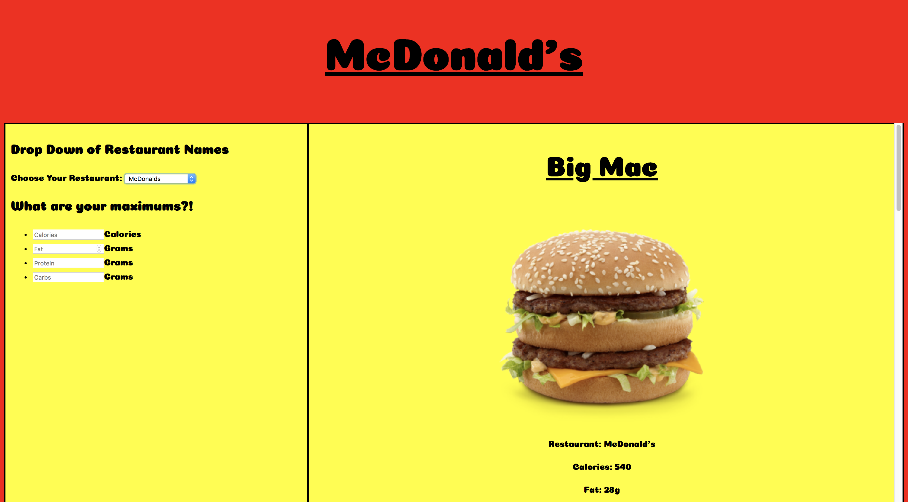
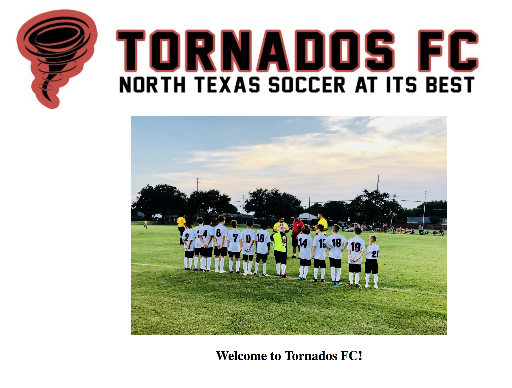

Just Another Day
My first project! Collision detection prevents the player from touching the bad guys, but rewards the player for reaching home. Using the arrow keys, make it from one end of the map to the other without touching the sad faced bullies!
Technologies Used: HTML, CSS, JavaScript
Cheat Meal
For my second piece, I created an app that allows a user to make meal decisions based off of calories, protein, fat, and carbs. Unlike other apps, mine is designed around the main three fast food restaurants: McDonald's, Burger King, or Wendy's.
Technologies Used: React, External API
Tornados FC Website
For my final project, I built a full-stack web page for my dad's soccer club, Tornados FC. Parents and players can come to the web page to view team game and practice schedules as well as the roster. The admin function can be used to create and delete information as desired by the admin. (Working on authorization for admin to be password protected)
Technologies Used: React on Rails